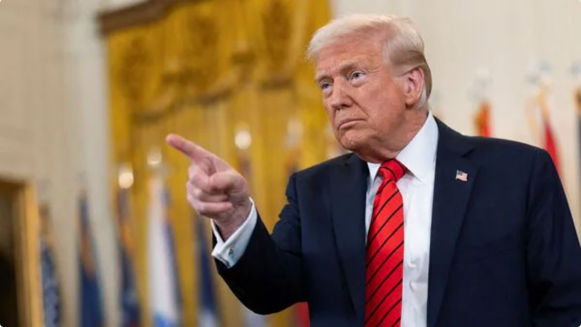

US delegation’s New Delhi visit set to boost trade talks as Trump tariffs loom
Published on: March 25, 2025
A US delegation led by assistant US trade representative Brendan Lynch will arrive in New Delhi on Tuesday for bilateral trade discussions. Trump is expected to announce his reciprocal tariff plan for all countries, including India, on 2 April.
New Delhi: As the deadline for US President Donald Trump’s reciprocal tariff plan approaches, a US delegation led by assistant US trade representative Brendan Lynch is set to arrive in New Delhi on Tuesday for bilateral trade discussions. Trump is expected to announce the reciprocal tariff plan on 2 April for all countries, including India, as part of efforts to correct the US's trade imbalance. The US currently has a trade deficit with India and several other countries. Lynch, who oversees trade relations with South and Central Asia, will be in India from 25-29 March for meetings with Indian officials, a US embassy spokesperson said.
The visit of the US team is seen as a sign of Washington’s commitment to fostering a balanced and productive trade relationship with India, as both nations have agreed to finalise a bilateral trade agreement by the fall of 2025. India also views this as an official channel to advance discussions that New Delhi had with its counterparts during a high-level delegation led by commerce minister Piyush Goyal from 4-8 March.
Growing the pie
Commenting on the development, Goyal said, "As directed by the leaders of the two countries, India remains committed to working with the US in trade and economic domains to enhance prosperity and innovation in both India and the US, and to deepen supply chain integration between the two countries."
“We look forward to productive and constructive discussions with the incoming U.S. delegation to expand and deepen our bilateral trade and economic ties in a mutually beneficial manner,” Goyal added. The proposed BTA aims to expand bilateral trade from $200 billion to $500 billion by 2030. As Mint reported on 18 February, India is seeking mutual tariff reductions from the US. With negotiations progressing in a positive direction, both nations have agreed to lower tariffs to benefit each other and facilitate trade expansion.